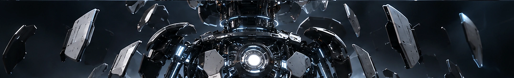
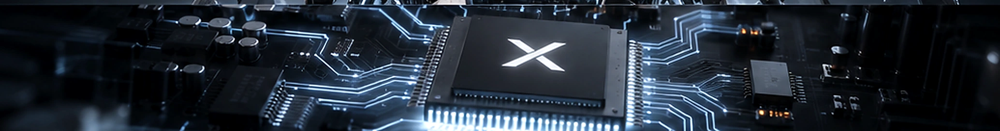
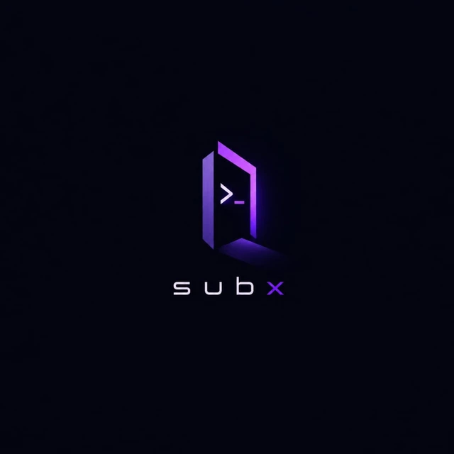

نزيل التعقيد
نفهم كل طبقة قبل بناء ما يليها، من حركة صغيرة إلى منظومة متكاملة.
SUBX / ENGINEERING THE FUTURE
الابتكار يبدأ عندما نرى ما وراء السطح.
نحوّل التجارب المعقّدة إلى حلول رقمية يشعر بها المستخدم. رحلة تبدأ من أدقّ مكوّن... وتنتهي بتجربة تستحق أن تُصنع.
BEYOND THE SURFACE
عندما تتقدّم في الصفحة، لا تبقى الصورة معلّقة في مكانها. تتحرك المكوّنات مع مرورك، وينكشف ما تحت الهيكل تدريجيًا.

نفهم كل طبقة قبل بناء ما يليها، من حركة صغيرة إلى منظومة متكاملة.
نهتم بتلك القرارات التي لا يلاحظها المستخدم مباشرة، لكنها تصنع الفارق.
نحوّل الأجزاء إلى تجربة متماسكة؛ كل مكوّن فيها يؤدي دورًا حقيقيًا.
THE INNER CORE
داخل هذه الطبقات تكمن النواة. آلاف الوصلات تعمل في تناغم، تمامًا كما تتحد البرمجة والتصميم والتجربة لتصنع منتجًا واحدًا.

SUBX COREWHERE IDEAS BECOME LOGIC
من النبضات الإلكترونية إلى لغة البناء. هنا تتكوّن الأنظمة، وتنطلق الأفكار في اتجاهات لا تنتهي.
✳ الأوامر هنا أمثلة تقنية توضيحية، ويمكنك تبديل الملفات ونسخها مباشرة.
BUILT WITH PURPOSE
نطوّر واجهات وتطبيقات ذات هدف واضح، تجمع بين البساطة وقوة التفاصيل. هذا عرض تصوري لإحدى تجاربنا الرقمية.
واجهة لإدارة الأموال بطريقة أبسط: حسابات متعددة، معاملات واضحة، نظرة على الميزانيات، وتقارير قابلة للفهم.
مشتريات عامة اليوم
− 85.00دخل إضافي أمس
+ 600.00تجربة مصغّرة تفاعلية: اضغط تبويبات الهاتف لمعاينة حالات مختلفة.
↘CAPABILITIES
من الشرارة الأولى إلى المنتج النهائي. كل مرحلة تتكامل مع التي تليها.
واجهات تفاعلية سريعة ومتجاوبة مع الأجهزة، مبنية لتبدو ممتازة وتعمل بموثوقية.
FRONTEND / RESPONSIVE / MOTIONتطبيقات تراعي المستخدم من أول نقرة، مع تجربة سلسة وخصائص تحقق قيمة حقيقية.
ANDROID / PRODUCT / UXنحوّل العمليات المعقدة إلى رحلات واضحة، وحركات دقيقة تعزز الفهم والراحة.
UI / UX / PROTOTYPESهوية مرئية ونظام تصميم له شخصية واحدة، من الشعار إلى حضور المنتج على الشاشة.
BRANDING / VISUAL SYSTEMSMETHOD OVER MAGIC
نفهم الفكرة والمشكلة والمستخدم قبل رسم أي شاشة.
نحوّل التوجه إلى نماذج واضحة وتفاصيل قابلة للاختبار.
نبني الحل بأساس نظيف وأداء قابل للتحسين والتوسّع.
نختبر التفاصيل، ثم نحسّن التجربة بناءً على الاستخدام الحقيقي.

A NEW POINT OF VIEW
نؤمن أن التقنية الجيدة ليست في عدد الأسطر، بل في ما تتركه من أثر. لذلك ننظر إلى كل مشروع كفرصة للجمع بين الحس الإبداعي والهندسة المدروسة.
هذه المساحة تعرض رؤيتنا للتصميم الرقمي: متجددة، عملية، وقابلة للاكتشاف.
حوّل فكرتك إلى تجربة ↗QUESTIONS & ANSWERS
نعم. ملفات الصور والخطوط المستخدمة هنا محلية، ولا يعتمد العرض على مكتبة ثلاثية الأبعاد خارجية. افتح index.html من المجلد بعد فك الضغط.
نعم. تتحرّك الصور والعناصر داخل أقسامها وفق موقعها أثناء التمرير، ثم تخرج من الصفحة بصورة طبيعية؛ الروبوت ليس عالقًا فوق الأقسام الأخرى.
صمّمناه ليستجيب لشاشات الهواتف والأجهزة اللوحية والكمبيوتر، مع قائمة خاصة بالجوال وتخفيف التأثيرات لمن يفضّل تقليل الحركة.
بالتأكيد. المحتوى موجود في index.html، والتنسيقات في css/style.css، والحركات والتفاعلات في js/main.js.
YOUR IDEA / OUR NEXT CHAPTER
جهّز وصفًا مختصرًا للمشروع بنقرة واحدة، وانسخه لإرساله عبر وسيلة التواصل التي تفضّلها.